Uma tradução que sempre devolve uma resposta é uma tradução que mente em algum lugar. Este artigo percorre os quatro caminhos do pacote e mostra, em cada um, onde ele para e por quê.
A ponte entre as duas ISCO
A Organização Internacional do Trabalho revisou a ISCO-88 em 2008, e a revisão não é uma renumeração: ocupações foram fundidas, separadas e movidas de grande grupo. A tábua do International Stratification and Mobility File registra essas mudanças, e em boa parte dos casos um código antigo tem mais de um destino possível.

table(isco88_isco08$n_alternativas > 1)
#>
#> FALSE TRUE
#> 344 186São 186 códigos ambíguos em 530. A escolha entre os destinos não é do pacote: a sintaxe do ISMF guarda as alternativas na parte decimal do código e manda truncá-la quando não há informação adicional. O pacote trunca, como manda, e guarda a contagem. Isso importa para ler o erro que resulta: como o destino escolhido é sempre o mesmo para um dado código de origem, o desvio é sistemático, não aleatório — ele não se cancela ao agregar.
A função devolve, por padrão, apenas o destino escolhido:
isco88_para_isco08("1229")
#> [1] "1300"E devolve a marca junto quando ela é pedida:
isco88_para_isco08("1229", com_ambiguidade = TRUE)
#> isco88 isco08 n_alternativas
#> 1 1229 1300 9O com_ambiguidade não muda a tradução. Ele diz quanta
confiança ela merece, e existe para que a incerteza possa entrar na
análise em vez de desaparecer nela.
A escada da CBO, e o empate
O dado administrativo brasileiro é sujo de um jeito específico: o código de seis dígitos da CBO-2002 aparece truncado em quatro, ou aparece com um sufixo que a tábua oficial não conhece. O pacote tem duas respostas para isso, e elas fazem coisas diferentes.

O empate decide o que fazer quando a entrada é uma
família de quatro dígitos e as ocupações dessa família não concordam num
único ISCO:
empatadas <- cbo2002_familia_isco88$familia[cbo2002_familia_isco88$empate]
length(empatadas)
#> [1] 19
suppressWarnings(cbo2002_para_isco(empatadas[1:3]))
#> [1] NA NA NA
cbo2002_para_isco(empatadas[1:3], empate = "moda")
#> [1] "2111" "2451" "3111"O padrão é "na", e é o padrão certo: numa família
empatada a tábua não sabe, e "moda" é uma escolha do
analista, que deve ser declarada.
A escada é outra coisa. Ela só age sobre o que já saiu
NA, e sobe a hierarquia da classificação até achar um
prefixo que a tábua conheça:
# códigos no formato da RAIS que não estão na tábua ocupação a ocupação
fora <- paste0(substr(cbo2002_isco88$cbo2002[1:40], 1, 4), "99")
sum(!is.na(suppressWarnings(cbo2002_para_isco(fora))))
#> [1] 0
sum(!is.na(cbo2002_para_isco(fora, escada = TRUE)))
#> Warning: 16 código(s) sem correspondência em cbo2002_isco88: 111199, 111399,
#> 131399, 141499, 141599, 141699, 141799, 142199, 142299, 142399, ...
#> [1] 33Quarenta entradas — 16 códigos distintos — que a tradução direta não
resolve, e a escada resolve trinta e três. O que resta NA é
um código só, repetido:
unique(fora[is.na(cbo2002_para_isco(fora, escada = TRUE))])
#> Warning: 16 código(s) sem correspondência em cbo2002_isco88: 111199, 111399,
#> 131399, 141499, 141599, 141699, 141799, 142199, 142299, 142399, ...
#> [1] "142399"E a razão não é que o prefixo falte na tábua. A família
1423 está lá:
suppressWarnings(cbo2002_para_isco("1423"))
#> [1] "2419"A escada exige que as ocupações compartilhem um ancestral na ISCO, e as da família 1423 se espalham por 1233, 1234, 1239 e 2419 — não há prefixo comum acima do primeiro dígito. A consulta por família não exige isso: ela devolve a moda. São duas regras diferentes para a mesma família, e a escada é a mais conservadora das duas.
fam <- cbo2002_familia_isco88$familia
por_familia <- suppressWarnings(cbo2002_para_isco(fam))
por_escada <- suppressWarnings(cbo2002_para_isco(paste0(fam, "99"), escada = TRUE))
fam[!is.na(por_familia) & is.na(por_escada)]
#> [1] "1423" "2531" "3123" "3227" "5101" "5199" "7612" "8421"Nessas famílias, entrar com quatro dígitos devolve um ISCO e entrar
com seis e escada = TRUE devolve NA. Não é
defeito: é a escada recusando o que a moda aceita. Mas quem alterna
entre as duas entradas precisa saber que elas não respondem a mesma
coisa.
O preço dos trinta e três é a perda de resolução, e ele fica
registrado: crosswalk_cbo2002() devolve a coluna
nivel_usado, que diz em que degrau cada tradução foi
obtida.
cw <- crosswalk_cbo2002(fora, escada = TRUE)
table(cw$nivel_usado, useNA = "ifany")
#>
#> 4 <NA>
#> 33 7A tradução que não tem tábua
Os três percursos acima partem de classificações que alguém publicou: a OIT publica a ponte, o Ministério do Trabalho publica a tábua da CBO, o IBGE publica a da COD. A tradução do cadastro do TSE para a ISCO-88 não tem documento externo nenhum. Ela é autoral — é a única do pacote — e por isso é a que mais merece ser auditada por quem usa.
O que ela custa não é opinião, é medida. Os códigos do TSE com ISCO caem num número de destinos muito menor que o seu próprio:
cw <- tse_isco[!is.na(tse_isco$isco88), ]
c(codigos_tse = nrow(cw),
isco88_distintos = length(unique(cw$isco88)),
valores_de_isei = length(unique(isco88_para_isei(cw$isco88))))
#> codigos_tse isco88_distintos valores_de_isei
#> 258 42 29Duzentos e cinquenta e oito códigos chegam a vinte e nove valores distintos de ISEI. A compressão não é uniforme: ela depende de em quantos dígitos a tradução foi possível.
table(cw$estrato, cw$nivel)
#>
#> 2 3 4
#> Classe alta 64 12 12
#> Classe média 57 8 4
#> Classes populares 96 5 0É aqui que está o ponto que nenhuma outra página do site diz. O refinamento a quatro dígitos é seletivo por estrato: doze dos oitenta e oito códigos da classe alta chegam lá, e nenhum dos cento e um das classes populares. O erro de medida que a tradução introduz não é ruído — é heterocedástico e correlacionado com a posição social que se quer medir.
A consequência prática é estreita e vale dizer inteira: comparações dentro das classes populares apoiam-se em escores mais agregados do que comparações dentro da classe alta, e uma diferença pequena no fundo da distribuição é menos confiável que a mesma diferença no topo. Não é razão para não usar a medida; é razão para não ler diferenças finas onde a tradução foi grossa.
A quebra de 2002 no cadastro do TSE
O TSE reformou o cadastro de ocupações entre a eleição de 2000 e a de 2002, e a reforma reaproveitou números. O código 214 era delegado de polícia até 2000 e hoje é escultor e pintor.
Convém separar duas datas que é fácil confundir. A reedição do cadastro é de 2002: é o fato documental. Mas o ano em que cada código reaparece com o rótulo novo é outro, e é o que o dado mostra:
tse_quebra_2002[tse_quebra_2002$tipo == "reutilizado",
c("cod_tse", "rotulo_ate_2000", "rotulo_apos_2002",
"primeiro_ano_novo")]
#> cod_tse rotulo_ate_2000
#> 5 214 DELEGADO DE POLICIA
#> 6 391 CHEFE INTERMEDIARIO
#> 7 215 OCUPANTE DE CARGO DE DIRECAO E ASSESSORAMENTO SUPERIOR
#> 8 216 OFICIAIS DAS FORCAS ARMADAS E FORCAS AUXILIARES
#> 9 521 GOVERNANTA DE HOTEL, CAMAREIRO, PORTEIRO, COZINHEIRO E GARCOM
#> 13 158 DESENHISTA TÉCNICO
#> 25 211 PROCURADOR E ASSEMELHADOS
#> rotulo_apos_2002 primeiro_ano_novo
#> 5 ESCULTOR E PINTOR 2006
#> 6 TAQUÍGRAFO E ESTENÓGRAFO 2006
#> 7 ARTISTA PLÁSTICO E ASSEMELHADOS 2006
#> 8 EMBALADOR, EMPACOTADOR E ASSEMELHADOS 2008
#> 9 GOVERNANTA 2004
#> 13 TÉCNICO EM INFORMÁTICA 2006
#> 25 ESTIVADOR, CARREGADOR E ASSEMELHADOS 2006Nenhum deles reaparece em 2002: são 2004, 2006 e 2008. O 214 só volta, como escultor, em 2006 — há um intervalo em que o código simplesmente não é declarado.
tse_vigencia(214)
#> cod_tse de ate rotulo n
#> 1 214 1998 2000 DELEGADO DE POLICIA 352
#> 2 214 2006 2026 ESCULTOR E PINTOR 706É primeiro_ano_novo, e não 2002, que o corte usa: o
pacote anula o escore onde ano < primeiro_ano_novo. Uma
candidatura de 2004 com o código 214 volta NA, e é o
comportamento certo — em 2004 aquele número não nomeava nem uma coisa
nem outra.
Por isso todas as funções da porta do TSE aceitam
ano:
tse_para_isei("214")
#> [1] 54
tse_para_isei(c("214", "214"), ano = c(1998L, 2026L))
#> Warning: 1 candidatura(s) usam código(s) que o TSE REUTILIZOU depois (214): naquele ano designavam outra ocupação, e voltam NA.
#> Veja ?tse_vigencia.
#> [1] NA 54Sem o ano, o pacote aplica o cadastro atual a tudo, e
uma série de 1998 a 2026 que passe por qualquer um desses códigos
descreve uma trajetória que nunca existiu. O
checa_periodo() avisa quando o vetor de códigos toca a
quebra.
A categoria residual
Nenhum dos percursos acima resolve o problema maior, que é anterior a todos eles: a ocupação mais declarada nas candidaturas brasileiras é “OUTROS”.
16.8% de todas as candidaturas de 1998 a 2026. O pacote devolve
NA para ela, e nenhuma escada, nenhum desempate e nenhuma
ponte muda isso. É o limite do dado, e ele é declarado em vez de
preenchido.